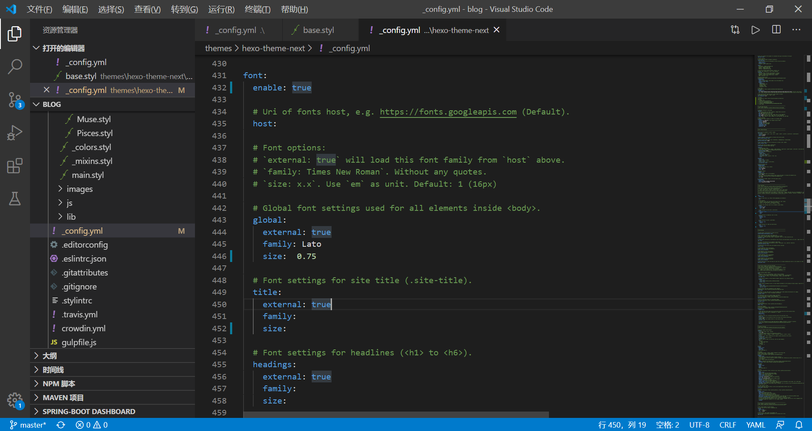

怎么优化博客
在基础的一些功能能熟练使用后，可以添加一些有趣的东西，自定义出自己的特色。
未完待续…..
官方链接：https://github.com/iissnan/hexo-theme-next
修改字体

打开上面这个文件，enable:true，size部分填写数字即可
头像设置
修改avatar的相关内容
logo设置
赞赏功能

修改如图目录的reward_setting部分即可，enable:true，再在此目录的source/images里放入相关的二维码，要注意命名和你代码里的要相同
coding加快访问速度
https://www.jianshu.com/p/547c2c3ff79e
这里提一个点，就是因为我是腾讯域名，在腾讯里添加coding的地址时，因为那个类型的负载超了（实际上我只有一次绑github的机会），本来不想给钱另寻它路的，结果直接在coding中添加域名解析，好像也可以，至少访问速度是快了很多呀！再多说一句，我有一个服务器的话，其实部署到服务器上也是可以的，以后可以试试，就是不知道一不一样方便。
公式问题
修改公式渲染
首先是基础的如何渲染公式问题，这里我没有使用latex的公式渲染
参考链接：https://www.jianshu.com/p/7ab21c7f0674
HEXO不兼容双大括号的问题
这个是我有两篇论文里使用了公式后发现hexo g报错，找了一下是出现了不兼容公式中的双大括号，推荐下面这个链接：
解决办法但是它的第二种方法尝试未果，治标不治本。我目前使用的比较方便的方法是遇到双大括号中间加一个空格。
公式中的’显示问题
目前我还没有找办法休整，之后更新
评论功能
访问量显示
文章加密访问
侧边栏推荐阅读
DaoVoice 在线联系
被搜索引擎收录
https://www.cnblogs.com/php-linux/p/8493346.html参考博客这篇，还不错，但是我的文件验证是临时的，后期需要改变一下，再就是我目前还没验证是否被收录，google的之后再弄。